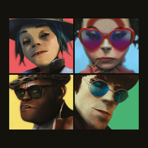

|
|
 |
|
|  | |
Discography
Find a full line up of Gorillaz most popular records here!
Click on each track to hear a preview. Each section will listen to the full album once you've logged into your Spotify!
The discography of the British virtual band Gorillaz consists of six studio albums, three compilation albums, two extended plays, one remix album, and 32 singles.
Gorillaz were formed in 1998 by Damon Albarn of alternative rock band Blur, and Jamie Hewlett, co-creator of the comic book Tank Girl. In 2001, the band released their first studio album, Gorillaz, followed by Demon Days in 2005, Plastic Beach in 2010, The Fall in 2011, Humanz in 2017, and The Now Now in 2018 . In November 2011, Gorillaz released The Singles Collection 2001–2011.